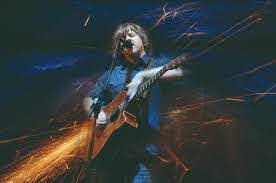

While Montgomery has been actively playing since he was around 13, and releasing music since 1990 with his first EP, Montgomery gained some momentum with the live performance at Austin City Limits in 1999. After this performance, Montgomery was given opportunity after opportunity,including writing music for the ABC TV show "Last Man Standing" and authoring music for the criminal drama "Arc".
The performance previously mentioned is what most people know Monte Montgomery for. Mind you, most people you walk up to more than likely won't know him, but if they do, there's a good chance they're a fanatic. The most well documented song of that performance is titled "When Will I", from his album "Mirror", also released in 1999.
There's several great performances of Monte (Mine inluded here, [1, 2]), but you may notice it's hard to find some information on Montgomery if you start looking. His work is something that is awed over in the guitar community. He's the source of inspiration for a lot of pickers, including myself.